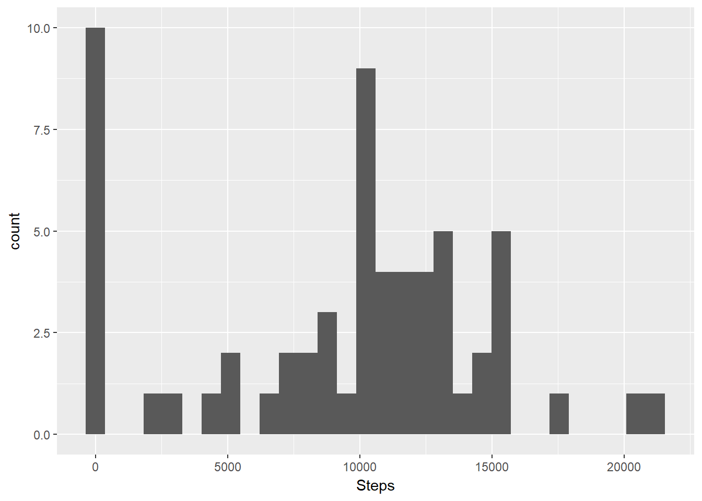
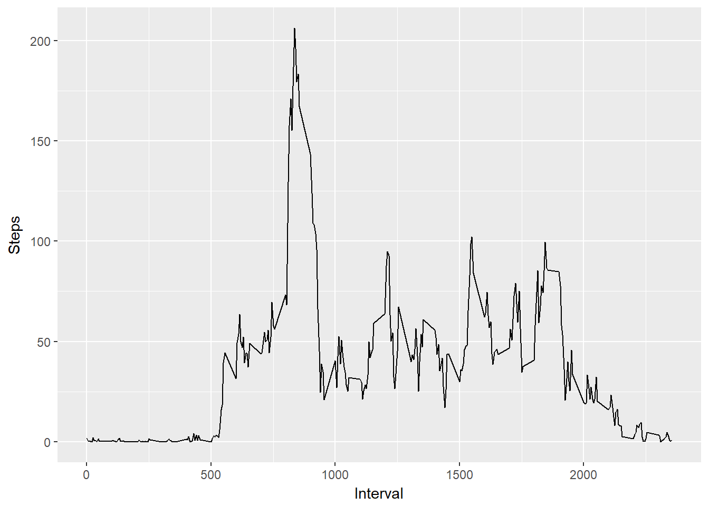
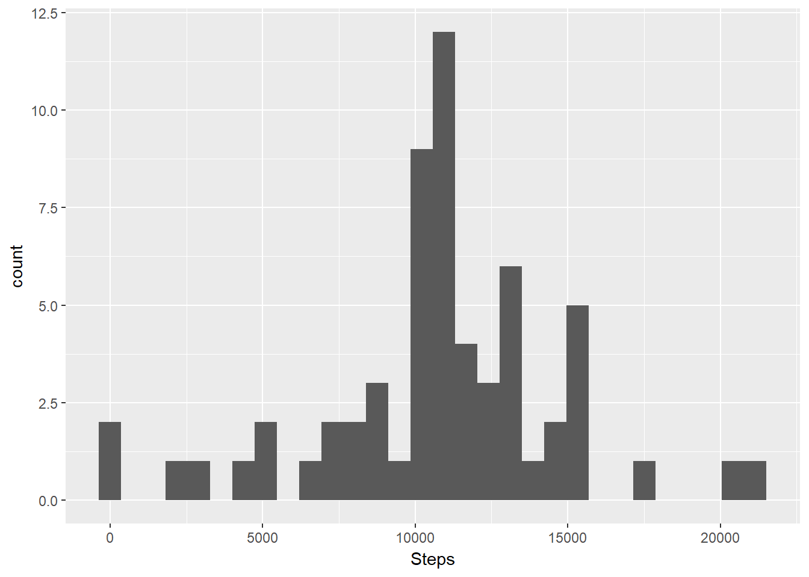
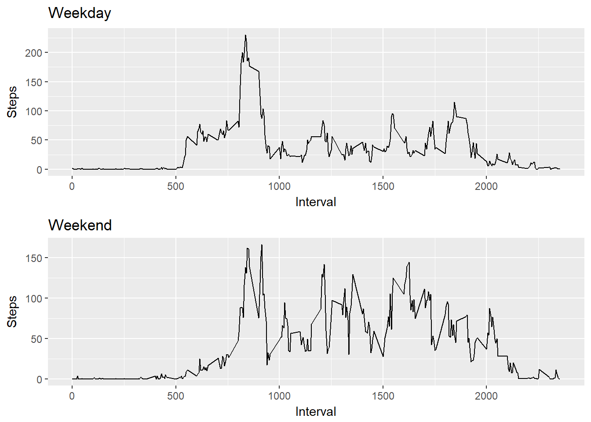

activity <- read.csv("activity.csv", header = TRUE)
activity$date <- as.Date(activity$date)TotalSteps <- aggregate(x = list(Steps = activity$steps), by = list(Date = activity$date), FUN = sum, na.rm = TRUE)library(ggplot2)
h <- ggplot(TotalSteps, aes(Steps))
h + geom_histogram(bins = 30)
mean(TotalSteps$Steps)## [1] 9354.23median(TotalSteps$Steps)## [1] 10395DailySteps <- aggregate(x = list(Steps = activity$steps), by = list(Interval = activity$interval), FUN = mean, na.rm = TRUE)
ts <- ggplot(DailySteps, aes(Interval, Steps))
ts + geom_line()
DailySteps[DailySteps$Steps == max(DailySteps$Steps), ]## Interval Steps
## 104 835 206.1698i <- 0; c <- 0
for(i in 1:nrow(activity)){
if (is.na(activity[i, ]$steps) == TRUE) c <- c + 1
}; c## [1] 2304Strategy: to fill in the missing values with the mean values for the 5-min interval.
activity.NAfilled <- activity
for(i in 1:nrow(activity.NAfilled)){
if (is.na(activity.NAfilled[i, ]$steps) == TRUE) activity.NAfilled[i, ]$steps <- DailySteps$Steps[activity.NAfilled[i, ]$interval == DailySteps$Interval]
}TotalSteps.NAfilled <- aggregate(x = list(Steps = activity.NAfilled$steps), by = list(Date = activity.NAfilled$date), FUN = sum, na.rm = TRUE)
ts.NAfilled <- ggplot(TotalSteps.NAfilled, aes(Steps))
ts.NAfilled + geom_histogram(bins = 30)
mean(TotalSteps.NAfilled$Steps)## [1] 10766.19median(TotalSteps.NAfilled$Steps)## [1] 10766.19Impact of imputing: Data exhibits less skewed, more of a bell-shaped distribution.
day <- c("Monday", "Tuesday", "Wednesday", "Thursday", "Friday")
end <- c("Saturday", "Sunday")
for(i in 1:nrow(activity.NAfilled)){
activity.NAfilled$week[i] <- ifelse(weekdays(activity.NAfilled$date[i]) %in% day, "weekday", "weekend")
}
activity.NAfilled$week <- as.factor(activity.NAfilled$week)library(gtable); library(grid)
DailySteps.NAfilled <- aggregate(x = list(Steps = activity.NAfilled$steps), by = list(Interval = activity.NAfilled$interval, Week = activity.NAfilled$week), FUN = mean)
ts1 <- qplot(x = Interval, y = Steps, data = DailySteps.NAfilled[DailySteps.NAfilled$Week == "weekday", ], geom = "line") + ggtitle("Weekday")
ts2 <- qplot(x = Interval, y = Steps, data = DailySteps.NAfilled[DailySteps.NAfilled$Week == "weekend", ], geom = "line") + ggtitle("Weekend")
g1 <- ggplotGrob(ts1); g2 <- ggplotGrob(ts2)
g <- rbind(g1, g2, size = "first")
g$widths <- unit.pmax(g1$widths, g2$widths)
grid.newpage(); grid.draw(g)